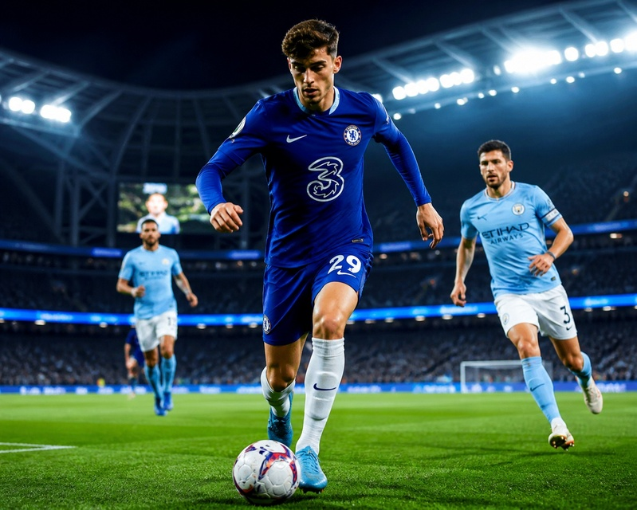
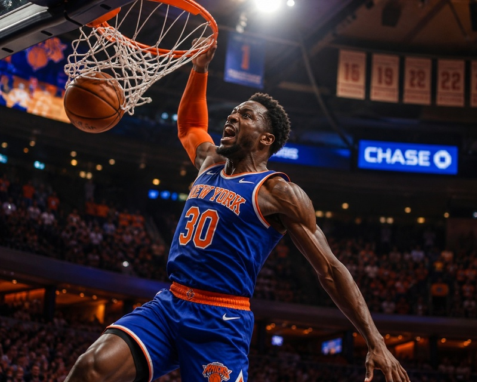
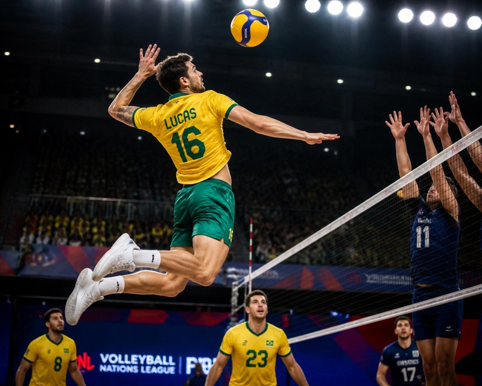

Futebol
O futebol é o esporte mais popular do Brasil e do mundo. Nesta editoria você encontra notícias de Brasileirão, Libertadores e seleção, além de análises táticas e grandes momentos da história do futebol.
Seu blog sobre esporte: notícias, análises e curiosidades
O Mundo Esporte é um blog dedicado ao universo esportivo. Aqui você encontra resumos das principais notícias, análises de jogos, curiosidades históricas e destaques dos maiores campeonatos do Brasil e do mundo.
Nossos conteúdos de destaque estão organizados em três editorias: Futebol, Basquete e Vôlei. Clique nas imagens abaixo para acessar cada página.

O futebol é o esporte mais popular do Brasil e do mundo. Nesta editoria você encontra notícias de Brasileirão, Libertadores e seleção, além de análises táticas e grandes momentos da história do futebol.

Da NBA ao NBB, o basquete combina atlétismo e estratégia. Nesta editoria reunimos destaques de temporada, perfis de jogadores e a evolução do basquete brasileiro.

O voleibol brasileiro é referência mundial. Nesta editoria você encontra resultados da Superliga, curiosidades sobre as ligas internacionais e as histórias das lendas da quadra.